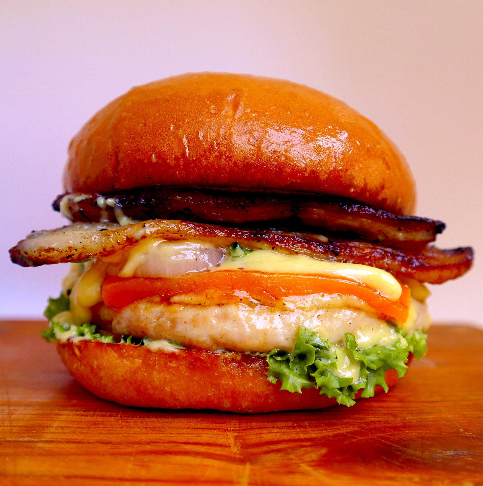
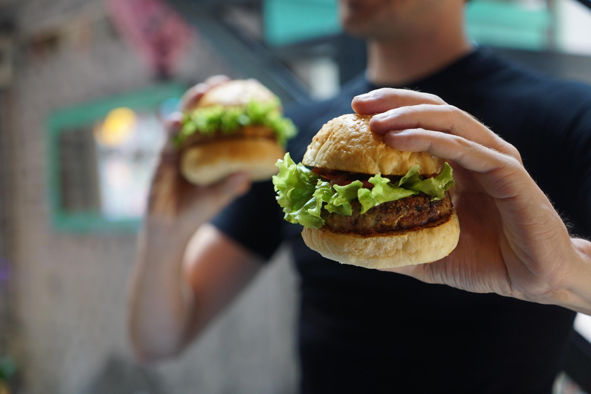

Burger maison

Préparez de délicieux burgers maison, une recette très facile et familiale. Savourez-les avec des frites classiques ou de patates douces pour un plat complet. Une option idéale pour un repas convivial.
Prépation:15 minutes Cuisson:10 minutes Total:25 minutes
Ingrédients pour 6 personnes
- 6 Pains à burger
- 600gr Viande de boeuf hachée
- 2 Belle Tomate(s)
- 2 Oignon(s) rouge
- 1,5 Oignon(s) blanc
- 6 tranche Cheddar
- 150 gr Roquette
- 6 c. à café Mayonnaise
- Huile d'olive
- Sel
- Poivre
Préparation
- Émincez finement l'oignon blanc. Placez la viande hachée dans un bol, mélangez-là avec l'oignon, salez, poivrez.
- Faconnez des steacks de la taille des pains à burger, enrobez-les de papier film et placez-les au frais 30 minutes.
- Pelez l’oignon rouge puis émincez-le. Rincez et essorez la roquette. Rincez la tomate puis coupez-la en rondelles.
- Faites chauffer l’huile dans une poêle et faites cuire les steaks 3 à 4 min de chaque côté, selon votre goût. En fin de cuisson, salez, poivrez, disposez 1 tranche de cheddar sur chaque steak et laissez-la légèrement fondre.
- Fendez les petits pains en 2 et toastez-les légèrement. Montez les burgers : tartinez chaque moitié de pain de sauce puis garnissez avec la viande, les rondelles de tomate, l’oignon ciselé et les feuilles de roquette. Refermez les burgers et servez aussitôt.

Conseil nutrition
Ce burger maison prouve qu'il est tout à fait possible de se faire plaisir tout en mangeant équilibré ! En misant sur un pain complet riche en fibres, une viande maigre cuite sans matière grasse et une sauce légère à base de fromage blanc, on divise par deux l'apport calorique d'un burger traditionnel sans rien sacrifier à la gourmandise. Accompagné d'une belle salade verte croquante ou de frites de patates douces au four, il constitue un repas complet, rassasiant et plein de vitalité.
Astuces
Quel accompagnement pour un burger ?
Un burger peut être accompagné de diverses garnitures et plats pour créer un repas complet et savoureux. Les frites de pommes de terre sont l'accompagnement classique par excellence. Elles peuvent être servies nature, assaisonnées ou même avec du fromage fondu. Une alternative aux frites classiques, les frites de patates douces offrent une saveur sucrée et sont souvent légèrement plus saines. Vous pouvez aussi cuisiner des anneaux d'oignon panés et frits.
Pour contrebalancer la richesse du burger, préparez une salade verte avec une vinaigrette légère, ou encore une salade de chou râpé. Pour une touche d’originalité, remplacer les frites traditionnelles par des chips de légumes comme le chou kale, les betteraves ou les carottes.
Quelles sauces servir ?
Outre le ketchup et la mayonnaise, les sauces classiques qui accompagnent souvent les burgers, la sauce barbecue fumée et sucrée peut être parfaite pour un burger. Vous pouvez aussi réaliser votre mayonnaise maison à l'ail, ou épicée.
Quel fromage pour un burger maison ?
Les possibilités sont multiples ! Si le cheddar et l’emmental sont une valeur sûre, d’autres fromages, plus doux, comme la mozzarella, ou plus gourmand, comme le bleu et le brie, fonctionnent à merveille. Du côté des fromages américains, l’american cheese est traditionnellement utilisé dans les burgers américains, car il fond facilement et offre une texture crémeuse, mais aussi le Monterey Jack, un fromage doux et fondant avec une légère note beurrée. La version épicée, le Pepper Jack, ajoute un peu de piquant. Les fromages italiens, comme le Provolone, sont tout aussi délicieux.
Retour page d'accueil